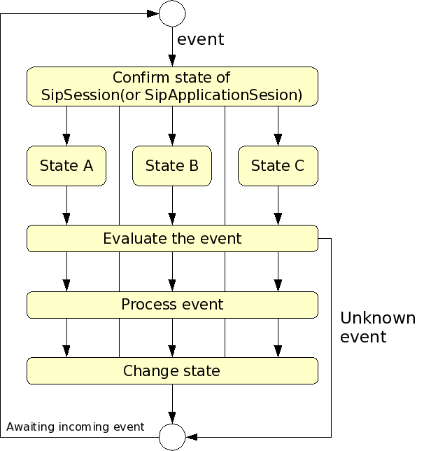

sf-api
はじめに
本ドキュメントは、SSFに関するドキュメントです。
SSF
Spring FrameworkはWebアプリケーション分野において、広範に使用されているDIフレームワークの一つです。 SIP Servlet APIは比較的新しい技術であるため、このようなフレームワークが存在していません。
DIコンテナの機能は、SIPのような「セッション開始/変更/終了」といった状態を管理するプロトコルとの親和性が高く、 またコード再利用やDI記述のための設定ファイルを状態遷移の管理に利用する等のメリットがあります。
このため、本フレームワークは、Spring Framework上にSIP/Webアプリケーションを構築するための コンテキスト、Scopeおよびアノテーションを提供します。
Spring Frameworkについては、 Spring Frameworkを参照してください。
SipServletによる開発の問題点
SIP Servlet API による開発では、SIPアプリケーションを構築する際に独特な作法で開発をする必要 があります。
以下のような基本的な状態管理等を行うことになります。
- ダイアログの状態を確認
処理対象となるダイアログおよびSipApplicationSession上での状態を確認します。
- イベント（SIPメッセージ、ServletTimer等）の評価
状態およびイベントの内容によって、処理対象であるかの判断をします。
- イベントの処理
イベントに一致した場合は処理の実行し、そうでない場合は処理を実行しない、もしくは 異常系処理を行います。
また、送受信するメッセージのヘッダ等のチェックを行います。
- 状態の変更
各処理実行後、ダイアログおよびSipApplicationSession上の状態を変更します。
SIPアプリケーションの開発では、これら”状態の確認”、”イベントの評価”、”イベントの処理”等の 処理を繰り返し記述する必要があります。
しかしServlet APIのみでWebアプリケーションを作成する場合と同様に、SIP Servlet APIを 直接利用したプログラミングでは上記処理をコードの再利用等によって実装することは困難です。
解決策
これら”状態の確認”、”イベントの評価”、”イベントの処理”等の処理をBeanで機能ごとに実装し、 再利用可能なものとするにはSpring FrameworkのようなDIコンテナが有用となります。
SIPアプリケーション開発を考慮して、SpringFrameworkを取り入れたものがSSFとなります。